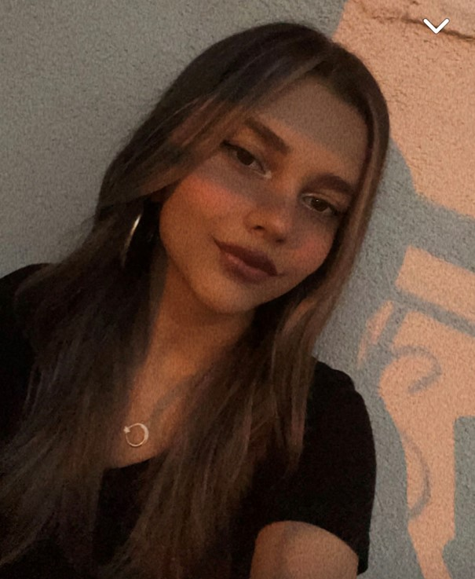

Reyhan Kayhan
1e jaars FDND Student

- Leeftijd
- 20
- Stad
- Rotterdam
- Email
- reyhan.kayhan@hva.nl
Over Mij
Met een hart voor webdesign en development, ben ik altijd op zoek naar manieren om mijn creativiteit en technische vaardigheden verder te ontwikkelen. Als student ben ik enthousiast om te leren en samen te werken aan projecten die impact maken. Ik geloof in de kracht van goed ontwerp om de digitale ervaring te verrijken en kijk uit naar nieuwe uitdagingen die me helpen te groeien.